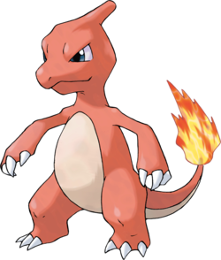
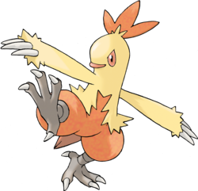
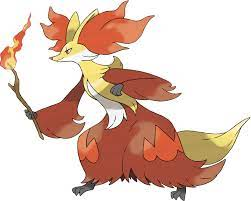

Salamèche n0004
Il préfère ce qui est chaud. En cas de pluie, de la vapeur se forme autour de sa queue.

Reptincel n0005.
Il est très brutal. En combat, il se sert de ses griffes acérées et de sa queue enflammée pour mettre en pièces ses adversaires.
Dracaufeu n0006.
On raconte que plus un Dracaufeu a vécu de combats difficiles, plus sa flamme est brûlante.
Héricendre n0155.
Héricendre se protège en faisant jaillir des flammes de son dos. Ces flammes peuvent être violentes si le Pokémon est en colère. Cependant, s’il est fatigué, seules quelques flammèches vacillent laborieusement.
Feurisson n0156.
Feurisson garde ses ennemis à distance grâce à l’intensité de ses flammes et à des rafales d’air brûlant. Ce Pokémon utilise son incroyable agilité pour éviter les attaques, tout en enflammant ses ennemis.
Typhlosion n0157
Ce Pokémon attaque à l’aide de flammes explosives. Il se dissimule derrière la brume produite par la chaleur intense de ses flammes.
Poussifeu n0255.
Poussifeu ne lâche pas son Dresseur d’une semelle, marchant maladroitement derrière lui. Ce Pokémon crache des flammes pouvant atteindre 1 000 °C et des boules de feu qui carbonisent l’ennemi.

Galifeu n0256.
Galifeu muscle ses cuisses et ses mollets en courant dans les champs ou dans les montagnes. Les jambes de ce Pokémon sont très puissantes et rapides, capables de donner 10 coups de pied en 1 seconde.

Braségali n0257.
Au combat, Braségali envoie des flammes ardentes de ses poignets. Il fait preuve d’un courage exceptionnel. Plus l’ennemi est puissant, plus les poignets de ce Pokémon sont ardents.
Gruikui n0498.
Il évite agilement les attaques ennemies et crache des boules de feu par le groin. Il aime griller des Baies pour les manger.
Grotichon n0499.
Plus il a mangé de Baies, plus il a de combustible, et il peut donc dégager davantage de flammes et de puissance.
Roitiflam n0500.
Il embrase ses poings avec les flammes sur son menton et cogne l’ennemi avec. C’est un Pokémon très solidaire.
Feunnec n0653.
En cas de coup de fatigue, il grignote des rameaux pour recharger ses batteries. Ses oreilles dégagent une chaleur qui dépasse les 200 °C.

Roussil n0654.
En cas de coup de fatigue, il grignote des rameaux pour recharger ses batteries. Ses oreilles dégagent une chaleur qui dépasse les 200 °C.

Goupelin n0655.
Peut prédire l’avenir s’il se concentre en fixant la flamme qui danse au bout de sa canne.
Flamiaou n0725.
Laissez ce Pokémon respirer ou il se renfermera sur lui-même. Même s’il devient affectueux, allez-y doucement avec les caresses.
Matoufeu n0726.
Il sait être affectueux avec son Dresseur, mais il ne connaît pas sa force. Câlinez-le, et vous vous retrouverez couvert de griffures.

Félinferno n0727.
Un Pokémon brutal qui n’en fait qu’à sa tête. Selon son humeur du moment, il lui arrive parfois d’ignorer sciemment les ordres de son Dresseur.
Flabino n0813.
Il court pour augmenter sa température et faire circuler l’énergie incandescente dans son corps. Il peut ainsi déployer toute sa puissance.

Lapyro n0814.
Son pelage épais lui permet de mieux résister au froid et d’augmenter la température de ses capacités Feu.
Pyrobut n0815.
Il drible avec des pierres pour en faire des ballons enflammés, avant de tirer sur ses adversaires pour les brûler.
Chochodile n0909.
Il s’allonge sur des pierres chaudes et produit de l’énergie de type Feu grâce à la chaleur absorbée par ses écailles rectangulaires.
Crocogril n0910.
La boule de feu en forme d’œuf qui surmonte sa tête résulte de la fusion entre son énergie de type Feu et son trop-plein de vitalité.

Flâmigator n0911.
Quand il chante, son oiseau de feu change de forme. Cet oiseau serait né lorsqu’une âme a pris possession de sa boule de feu.